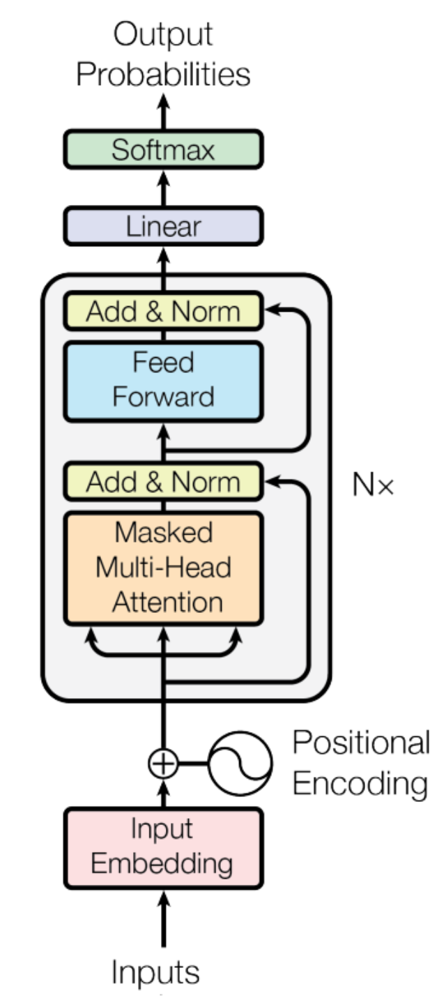

なぜLLMはMacBookでも動くのか？計算力とメモリから見るその仕組み
Macbookでも意外にLLMを動かすことができる
最近、OpenAIのO1レベルのOSSモデル、DeepSeek-R1が出ました。そして、XではM4 64GBのMac miniを8台繋いでクラスターにして、671Bのモデルを動かしたスレッドがありました。
Running DeepSeek-V3 on M4 Mac Mini AI Cluster
671B MoE model distributed across 8 M4 Pro 64GB Mac Minis.
Apple Silicon with unified memory is a great fit for MoE. pic.twitter.com/FmeARutaxq— EXO Labs (@exolabs) December 27, 2024
スレッドを見た時、「嘘だろう、671BのモデルをMac miniで動かせるの？」というのが最初の感想でした。色々調べた後、LLMを動かす際には、制限として主に「計算スピード」と「メモリのスピード」の2つがあることがわかりました。バッチサイズが1で推論する場合は、だいたい計算スピードではなく、メモリのスピードで足が引っ張られています。
例えば、int4 で量子化したモデルで推論する場合、A100とMac mini M4を比較してみると、
| デバイス | メモリスピード | 計算力 |
|---|---|---|
| A100 | 1935 GB/s | 1248 TOPS |
| Mac mini M4 | 120 GB/s | 38 TOPS |
| A100/ Macmini | 16x | 32x |
A100の計算力はMac miniの32倍ですが、メモリスピードは16倍しかありません。なので理論上は、Mac miniはA100の1/16のスピードで出力することができます。
これからは、この話をさらに展開して原理までわかるようにします。
GPUの仕組みを理解する
CPU の構造とよく似ていて、GPUにもキャッシュがあります。下図でメモリのアーキテクチャを示しています。

GPU SRAM： GPUの計算ユニット内蔵のメモリ。最速だが、最も容量が小さい（19TB/s、20MB）。
GPU HBM： GPUのメインメモリ。中間の速度と容量（1.5TB/s、40GB）。
メインメモリ DRAM： 最も低速だが、最も容量が大きい（12.8GB/s、>1TB）。
計算する前に、まずモデルのパラメータをCPUのメモリからGPU HBMに送る必要があります。model.to("cuda")はこの処理を行っています。計算する際に、必要なデータをHBMからGPUチップに内蔵されているSRAMに転送し、そこで計算を行います。計算が終わっていても、次のデータがまだ来ていない場合は、計算を止めて、データの転送を待たなければいけません。バッチサイズが小さい場合は、計算量が少ないため、データの転送を待つことになり、これがいわゆる「メモリバンド」です。
実際に推論スピードを概算してみる
概算方法
まず、概算するための式を示します。
\[ \text{latency}_\text{memory} := \dfrac{P\cdot n_{\text{bytes}}}{n_{\text{memory bandwidth}}} \]
\[ \text{latency}_\text{compute} := \dfrac{2 \cdot P \cdot B}{n_{\text{flops}}} \]
この中で、
\(P\)はモデルのパラメータ数。
\(n_{\text{bytes}}\)はデータタイプに必要なバイト数。例えば、デフォルトのfp32を使う場合は4バイト、fp16の場合は2バイト、int4の場合は0.5バイト。
\(n_{\text{memory bandwidth}}\)は名前の通り、メモリ帯域幅のこと。
\(B\)はバッチサイズ。
\(n_{\text{flops}}\)は計算スピード
メモリのレイテンシーは比較的わかりやすいです。分子は1トークンを計算するために計算ユニットのメモリ(SRAM)に送るデータ量のことです。それをメモリ帯域幅で割ると、データ転送の時間を概算することができます。
計算のレイテンシーは少しややこしいです。概算する際には、経験則で1トークンにかかる計算量を\(2P\)とします(この後で詳細に計算してみます)。それをバッチサイズ\(B\)に掛けると、\(B\)個のトークンを計算するために必要な計算量になります。それを計算スピードで割ると、計算の時間を概算することができます。
A100とMac mini M4を比較する
これで、計算スピードとメモリスピードの比較ができるようになりました。表にある内容を式に代入して、A100とMac mini M4を実際に比較してみます。 ここでの前提条件としては、7Bのモデルをint4で推論する場合です。
| デバイス | メモリ観点で 1秒処理できるトークン数 |
計算力観点で 1秒処理できるトークン数 |
|---|---|---|
| A100 | 552 | 89,142 |
| Mac mini M4 | 34 | 2,714 |
| A100/ Macmini | 16x | 32x |
まず、デバイスごとに見ると、A100とMac mini M4の両方ともメモリスピードで足が引っ張られています。例えば、A100の場合は、計算力で概算すると、1秒に89,142トークンを処理できるのに対して、メモリスピードで概算すると、552トークンしか処理できません。Mac Mini M4も同じ状況です。
また、Mac Mini M4でも、一秒に34トークンを処理することができます。もし、Mac Mini M4 Proにすると、帯域幅が倍の273になり、処理できるトークン数も倍になります。
実際のテスト結果として、Mac Mini M4の計算スピードは大体24 tokens/secです。これは、概算の34 tokens/secと近いです。
計算のコードは以下です。
P = 7e9 # 7Bモデル
n_bytes = 0.5 # int4
n_memory_bandwidth_A100 = 1935e9
n_memory_bandwidth_Macmini = 120e9
n_tops_A100 = 1248e12
n_tops_Macmini = 38e12
def memory_latency(n_bytes, n_memory_bandwidth, P):
return P * n_bytes / n_memory_bandwidth
def compute_latency(n_tops, P, B=1):
return 2 * P * B / n_tops
memory_latency_A100 = memory_latency(n_bytes, n_memory_bandwidth_A100, P)
memory_latency_Macmini = memory_latency(n_bytes, n_memory_bandwidth_Macmini, P)
compute_latency_A100 = compute_latency(n_tops_A100, P)
compute_latency_Macmini = compute_latency(n_tops_Macmini, P)
print('1/memory_bandwidth_A100: ', int(1 / memory_latency_A100))
print('1/memory_bandwidth_Macmini: ', int(1 / memory_latency_Macmini))
print('1/compute_A100: ', int(1 / compute_latency_A100))
print('1/compute_Macmini: ', int(1 / compute_latency_Macmini))
print('A100/Macmini memory: ', int(memory_latency_Macmini / memory_latency_A100))
print('A100/Macmini compute: ', int(compute_latency_Macmini / compute_latency_A100))2Pの由来
最後に、なぜ\(2P\)という計算量を使ったのかを説明します。簡単に言うと、LLMが推論する時、メインとなる処理は行列間のmatmulです。matmulを一回することで、掛け算と足し算の2つの計算が行われます。そのため、1トークンを計算するためには、\(2P\)の計算が必要です。
この\(2P\)の経験則が本当に合理かを実際に計算してみましょう。
まず、そもそもTransformerのDecoderのアーキテクチャを復習しましょう。

トークンを生成する際に、計算のほとんどが全部真ん中のN個の灰色のブロックの中にあります。その中で、特に行列間の掛け算が計算量を多く消費する部分です。さらに詳細にいうと、\(d_{\text{model}}\)はモデルの隠れ層の次元数とすると、計算量が\(d_{\text{model}}^2\)の部分に主導されます。アルゴリズムの性能を把握する際に使うBig-O記法で言うと、\(O(d_{\text{model}}^2)\)です。
これからは、TransformerのDecoderの灰色のブロックの中の計算量をステップごとに概算してみます。nanoGPTのソースコードと一緒に見ればもっと理解しやすいです。
- \(qkv\)の計算
Self-Attentionを計算する際に、まずは、インプットしてきたトークンのベクトル\(t_e\) と ウェイト \(W_q, W_k, W_v\) それぞれ掛け算する必要があります。 \[ \begin{aligned} q &= t_e \cdot W_q \\ k &= t_e \cdot W_k \\ v &= t_e \cdot W_v \end{aligned} \] ここでは、\(t_e \in \mathbb{R}^{1 \times d_{\text{model}}}\)、\(W_q, W_k, W_v \in \mathbb{R}^{d_{\text{model}} \times d_{\text{model}}}\)です。
これで、この計算に必要なFlopsは、\(2 \cdot 3 \cdot d_{\text{model}}^2\)です。 \(2\)は1回の掛け算に必要な計算量、\(3\)は\(W_q, W_k, W_v\)の3つの行列を掛ける必要があるためです。 - Attentionの計算
次に、できた\(q, k, v\)を使って、Attentionを計算します。 \[\text{softmax}((q \cdot k) \div \sqrt{d_{\text{head}}}) \cdot v = z\] このなかで、\(q, k, v \in \mathbb{R}^{1 \times d_{\text{model}}}\)。\(q, k, v\)が全部ベクトルのため、計算量は\(d_{\text{model}} + d_{\text{model}}\)で、無視できます。 - Attentionの出力を計算
次にAttentionの出力を計算します。 \[out = z \cdot W_o\] この中で、\(z \in \mathbb{R}^{1 \times d_{\text{model}}}\)、\(W_o \in \mathbb{R}^{d_{\text{model}} \times d_{\text{model}}}\)。計算量は\(2 \cdot d_{\text{model}}^2\)です。 - Feed-Forwardの計算
最後に、Feed-Forwardを計算します。式は以下です。 \[ \begin{aligned} out_1 &= out \cdot W_1 \\ out_1 &= \text{ReLU}(out_1) \\ out_2 &= out_1 \cdot W_2 \end{aligned} \] 1行目について、\(W_1 \in \mathbb{R}^{d_{\text{model}} \times 4d_{\text{model}}}\)、\(out_1 \in \mathbb{R}^{1 \times 4d_{\text{model}}}\) のため、計算量は\(2 \cdot 4 \cdot d_{\text{model}}^2\)です。
2行目はReLUの計算なので、無視できます。
3行目について\(W_2 \in \mathbb{R}^{4d_{\text{model}} \times d_{\text{model}}}\)、\(out_2 \in \mathbb{R}^{1 \times d_{\text{model}}}\)で、計算量は一行目と同じ\(2 \cdot 4 \cdot d_{\text{model}}^2\)です。
以上の計算を合計すると、1トークンを計算するためにレイヤー一層の計算量がわかります。 \[ \begin{align*} &2 \cdot 3 \cdot d_{\text{model}}^2 + 2 \cdot d_{\text{model}}^2 + 2 \cdot 4 \cdot d_{\text{model}}^2 + 2 \cdot 4 \cdot d_{\text{model}}^2 \\ &= 6 \cdot d_{\text{model}}^2 + 2 \cdot d_{\text{model}}^2 + 8 \cdot d_{\text{model}}^2 + 8 \cdot d_{\text{model}}^2 \\ &= (6 + 2 + 8 + 8) \cdot d_{\text{model}}^2 \\ &= 24 \cdot d_{\text{model}}^2 \\ \end{align*} \] さらに、それを層数\(N\)で掛けると、\(24 \cdot n_{layers} \cdot d_{\text{model}}^2\)になります。これが、1トークンを計算するために必要な計算量です。
これを7Bのモデルで計算する場合、\(d_{\text{model}} = 4096\)、\(n_{layers} = 32\)です。計算すると、\(24 \cdot 32 \cdot 4096^2 =12.9 \times 10^{9}\)になります。7Bの2倍は14Bなので、約92%合っています。
まとめ
本文では、なぜGPUが弱小なMacBookでもLLMがちゃんと動作するのかについて、計算力とメモリスピードの観点から解説しました。LLMの計算パワーとメモリの速度という、普段はあまり気にしない2つの視点で、LLMの世界を少しだけ覗いてみました。高性能スポーツカーを前にして、馬力だけじゃなくタイヤのグリップや路面との摩擦まで気にしてしまうような、ちょっとマニアックな話だったかもしれません。
しかし、今DeepSeek-R1のようなOSSかつ高性能なモデルが出ているので、これからローカルでLLMを動かすことがますます増えると思います。その際に、この文章が役に立つでしょう。